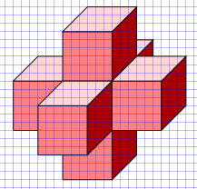
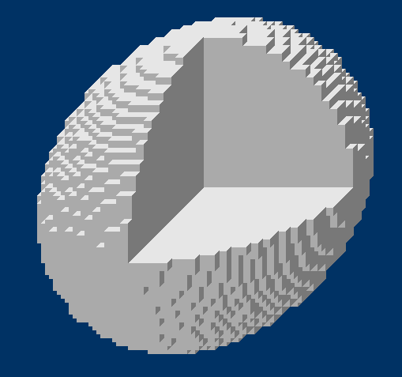

Один из способов нарисовать объёмную картинку на плоскости - это всё, что "смотрит на нас" рисовать без искажений, а линии, уходящие от нас "в глубину" рисовать под углом 45 градусов, уменьшая размеры в раз. Особенно удобно таким способом рисовать кубики (можно делать это на бумаге в клетку). Поскольку перспектива (уменьшение изображения при удалении от нас) при этом способе не учитывается, кубики получаются "бесперспективные".
A. Напишите функцию, которая рисует бесперспективный кубик размера size в заданной точке холста с координатами х и у (в этой точке находится нижняя левая ближайшая к нам вершина кубика - как на рисунке). Не забудьте, что ось Оу направлена вниз!
Пример программы, рисующей прямоугольник и многоугольник с помощью модуля tkinter.
from tkinter import * # Импортируем модуль tkinter XMAX = 600 YMAX = 500 # создаём графическое окно root = Tk() # создаём холст в окне canv = Canvas(root, width=XMAX, height=YMAX, bg="lightblue") canv.pack() canv.create_rectangle(200, 300, 300, 150, fill='red', outline='black', width=1) canv.create_polygon(40, 110, 160, 110, 190, 180, 10, 180, fill='orange', outline='black') root.mainloop() # Задерживаем окно на экране (эта команда должна быть последней)
Если надо убрать контур, оставив только заливку, используйте параметр width=0.
Пример программы, рисующей прямоугольник и многоугольник с помощью модуля PIL (обратите внимание на скобки в параметрах функции!).
from PIL import Image, ImageDraw
XMAX =600
YMAX = 400
x0 = 30
y0 = 100
x1 = 400
y1 = 200
img = Image.new("RGB", (XMAX, YMAX), (250, 150, 50)) # Создаём новое растровое изображение
img_draw = ImageDraw.Draw(img) # Создаём объект, который позволяет рисовать поверх изображения img
img_draw.rectangle((x0, y0, x1, y1), outline=(0, 0, 0), fill=(170,170,170))
img_draw.polygon((x0+100, y0+150, x1+100, y1+150, x0+100, y1+150), outline=(0, 0, 0), fill=(230,230,230))
img.save('picture1.png') # Сохраняем картинку в файл
img.show() # Открывается стандартная программа для показа изображений
Если надо убрать контур, оставив только заливку, используйте параметр outline=None.
B. Используя функцию из задания А, нарисуйте следующие картинки:
Подсказка: Чтобы сдвинуть кубик вглубь (по оси Z), нужно к х-координате прибавить, а от у-координаты отнять половину расстояния.
C. Напишите программу, которая "построит" пирамидку из одинаковых кубиков:
D. Напишите функцию, которая получает на вход три координаты кубика (х, y и z) и его размер (size) и, используя уже имеющуюся функцию от двух координат, рисует кубик, учитывая его сдвиг по оси z.
С помощью этой функции нарисуйте следующие картинки (чем глубже картинка, тем заметней искажения):

Е. Добавим немножко магии. Пусть всё пространство заполнено маленькими бесперспективными кубиками. Пройдёмся с помощью вложенных циклов по всем кубикам, но будем рисовать только те из них, которые удовлетворяют заданному условию. Например, условие вида
(x - x1)**2 + (y - y1)**2 <= r**2
где х1, у1 и r1 - некоторые числа, а х и у - координаты кубиков, позволит нарисовать цилиндр:
Добавив с помощью логических операторов ещё одно условие, можно "отрезать" от него кусочек, например, вот так:
или так:
F. У шара сумма квадратов расстояний до центра по осям х, у и z меньше или равна квадрату радиуса.

"Седло" получается, если квадрат расстояния по одному из измерений вычесть, а не прибавлять.
Октаэдр - если ограничить не сумму квадратов расстояний, а сумму самих расстояний (модулей).
А это - комбинации октаэдра и шара:
А это - "седла" и шара:
А можно и так: )